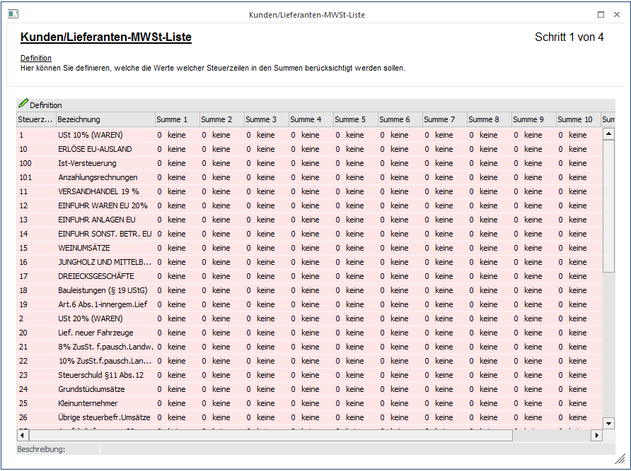
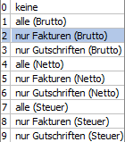
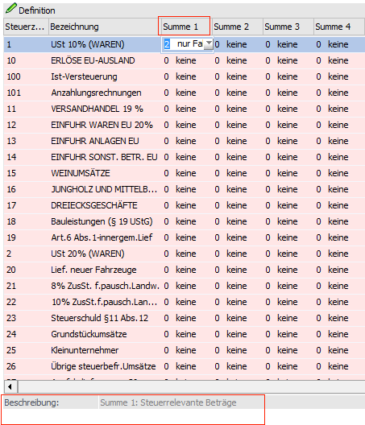
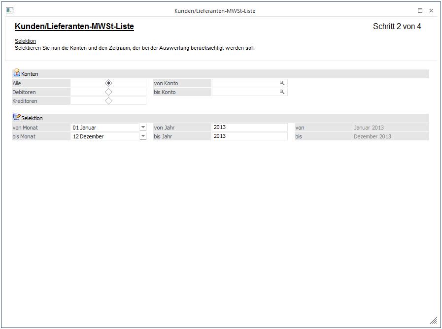
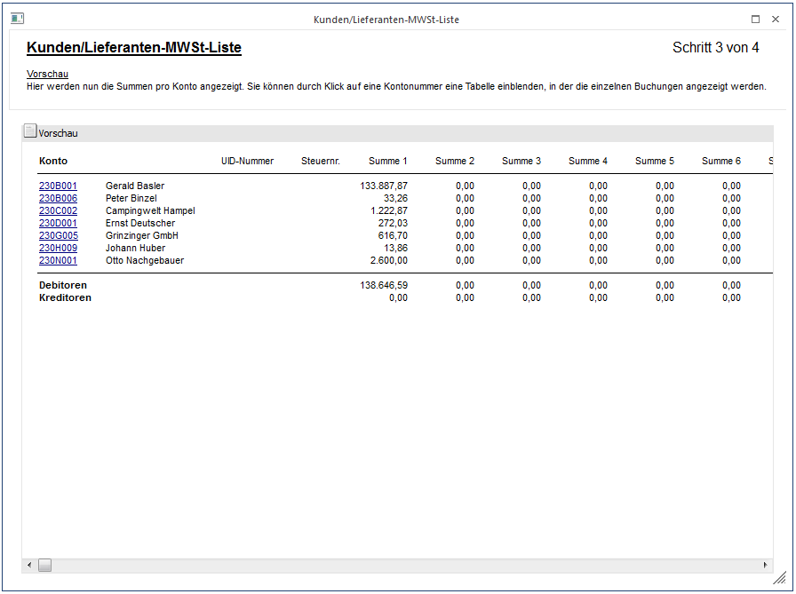
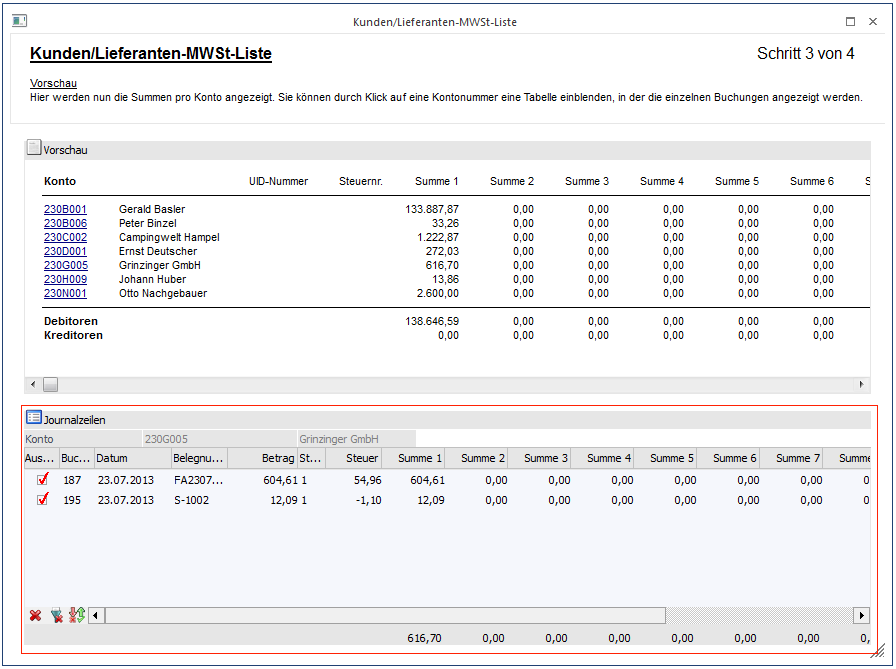

Über dem Menüpunkt
1 Auswertungen
1 Steuer-Meldungen
1 Kunden/Lieferanten - MWST-Liste
kann jene Liste für die italienische Jahresmeldung IVA erstellt und ausgegeben werden.
Für die Erstellung der Auswertung führt ein Wizard durch vier Schritte durch.
1. Schritt: Definition der Summe
Im ersten Schritt wird pro Steuerzeile und Summe festgelegt, welche Werte mitspielen sollen.

Im Listenfeld stehen folgende Werte zur Verfügung:

Diese "Summen" entsprechen dann den Werten in der zu erzeugenden Datei. Die Definitionen die im ersten Schritt vorgenommen werden, werden mandantenabhängig für spätere Wiederverwendung gespeichert.

In der Info - Zeile unter der Tabelle wird angezeigt, welches Feld in der Datei aus dieser Summe befüllt wird.
Achtung
Bei jahresübergreifenden Auswertungen muss der Unternehmensstamm in alle ausgewerteten Jahren übereinstimmen, da immer die Definition vom aktuellen Mandanten verwendet wird.
Mit dem VOR-Button gelangt man in den nächsten Schritt.
2. Schritt: Selektion
In diesem Schritt wird die Selektion der Konten vorgenommen und der Zeitraum für die Auswertung wird festgelegt.

Konten
Ø Konten
Eingrenzung des Ausgabebereiches auf Alle Konten / Debitoren / Kreditoren
Ø von Konto / bis Konto
Einschränkung der Auswertung durch Angabe von Kontengrenzen.
Selektion
Ø von Monat / bis Monat
Eingabe der Monatsgrenzen, die auf der MWST-Liste berücksichtigt werden sollen.
Ø von Jahr / bis Jahr
Da es sich um eine jahresübergreifende Auswertung handelt, muss auch das Jahr festgelegt werden.
Auf der rechten Seite im Fenster wird angezeigt, welcher Kalendermonat und welches Kalenderjahr tatsächlich ausgewertet werden.
Beim Verlassen des Schrittes durch den VOR-Button wird eine temporäre Tabelle mit allen Werten gefüllt, die der Selektion entsprechen. Damit man überhaupt in den dritten Schritt gelangt, muss vorher die UVA-Vorbereitung durchgeführt worden sein. Falls dies noch nicht durchgeführt worden ist, wird folgende Meldung ausgegeben:
Nachdem die Meldung bestätigt wird, öffnet sich das UVA-Vorbereitungsfenster und es kann die Vorbereitung für das entsprechende Wirtschaftsjahr durchgeführt werden.
Zu jeder betroffenen Journalzeile (DF/KF) wird auch der Kontenstamm des entsprechenden Wirtschaftsjahres geladen, da es möglich ist, dass das Konto im aktuellen Jahr nicht vorhanden ist, d.h. dass die UID-Nummer in allen Wirtschaftsjahren eingetragen sein muss, da die Zeile ansonsten nicht gefunden werden kann.
Mit dem VOR-Button gelangt man in den dritten Schritt.
3. Schritt: Liste der betroffenen Konten
Hier werden nun alle betroffenen Kunden und die dazugehörigen Summen aufgelistet.

Durch einen Klick auf die Kontonummer wird das Fenster erweitert, in dem die Journalzeilen für das Konto in einer Tabelle angezeigt werden.

In der Tabelle können einzelne Buchungen aus der Auswertung rausgenommen werden. Im unteren Teil der Tabelle werden die neuen Werte der Summen angezeigt.
Buttons
Ø Aktualisieren
Der "Aktualisieren"-Button bewirkt, dass die Werte in der Vorschau aktualisiert werden, d.h. dass die Summen aus der temporären Tabelle neu gerechnet werden.
Mit dem Schließen-Button im Fuß der Tabelle kann das Fenster wieder ausgeblendet werden.
Hinweis
Der vierte Schritt steht nur in italienischen Mandanten zur Verfügung und wird daher nicht näher beschrieben.